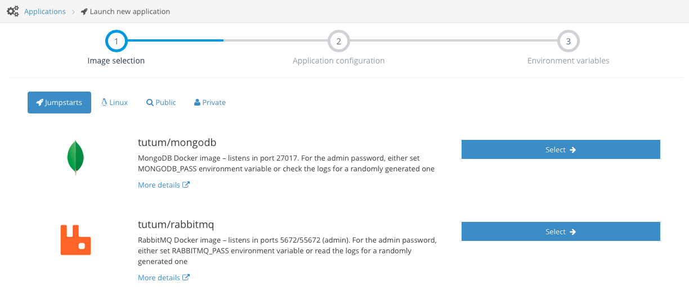
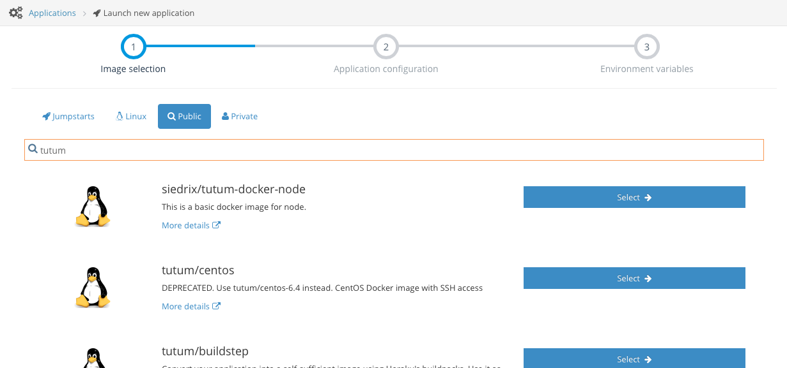
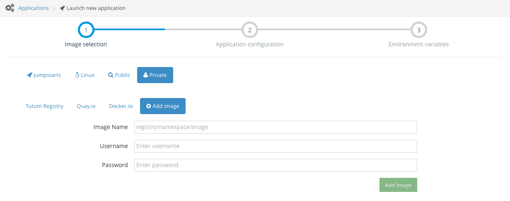
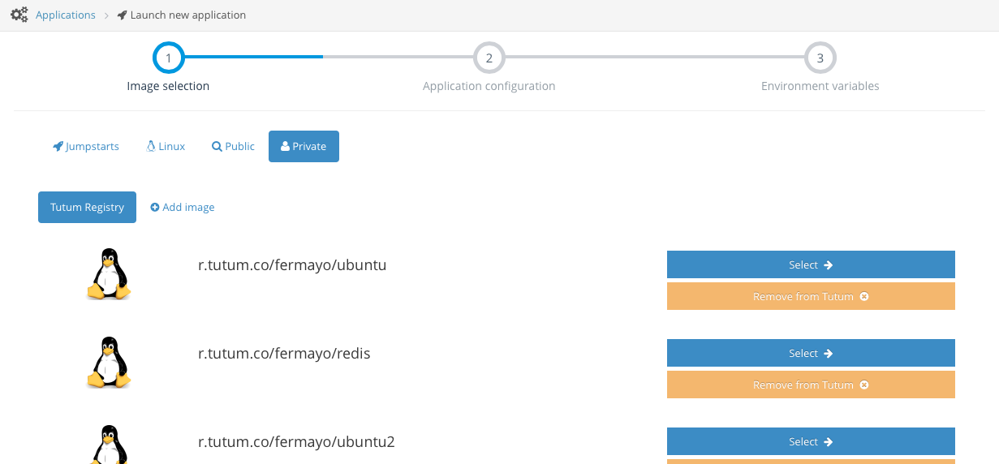

Docker image deployment¶
With Tutum, deploying public and private Docker images from any registry is very easy. To get started, click on the Launch your first application button on the dashboard.
Tutum currently supports the following sources of images:
- Public images in the Docker Index
- Private images in the Docker Index or a third party registry
- Private images in Tutum’s private registry
Furthermore, Tutum has created a set of open source images for popular software applications called Jumpstarts. These images are available in the Docker Index and have their own section in the wizard (see Jumpstart Images).
Deploying a Jumpstart image¶
In the Image selection section of the Launch new application wizard, click on the Jumpstarts tab.
Select the image for the application you want to launch. Clicking on the More details link will take you to the details page in the Docker Index where you will find more information about that specific image, such as environment variables used for configuration. Alternatively, you can also find more information about Jumpstart images in Jumpstart Images.
Deploying a public image from the Docker index¶
In the Image selection section of the Launch new application wizard, click on the Public tab.
You can enter any term here which will be used to search the Docker Index. Results contain a link to their details page on the Index. Click on the Select button to get to the next step.
Deploying a private image from the Docker index¶
In order to launch a private image from the Docker index for the first time, you will have to add it first to Tutum with a valid username and password with owner or collaborator access to that image, and then select it for deployment. Further deployments will use the stored credentials.
Click on the Private tab, and then on the Add image tab. A form like the following will be displayed:
Enter the image name (i.e. tutum/my-private-image), along with your Docker.io username and password to be used to download the image, and click on Add Image. If the credentials were valid, you will see your image added under the Docker.io tab. Click on the Select button to get to the next step.
In order to remove it from your account, just click on Remove from Tutum. Please note that this will only delete the credentials stored in Tutum and will not delete the image from the Docker Index.
Deploying a private image from a third party registry¶
If you want to launch an application from a third party service like Quay.io, you will need to follow similar steps as the previous section. Make sure that you provide the full image name including the registry host, for example, quay.io/tutum/my-private-image, and valid credentials with read access.
Deploying a private image from Tutum’s private registry¶
Tutum provides a free private registry for its users. Before launching the application, you will need to push your image to Tutum’s registry. See Private registry for more details.
Once you push your image, it will automatically appear under the Tutum Registry tab inside the Private tab.
Click on the Select button to get to the next step.